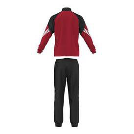
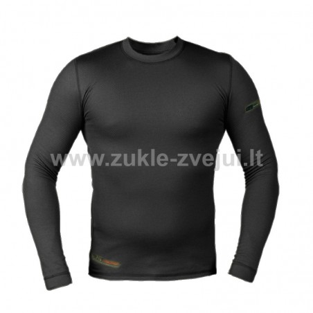
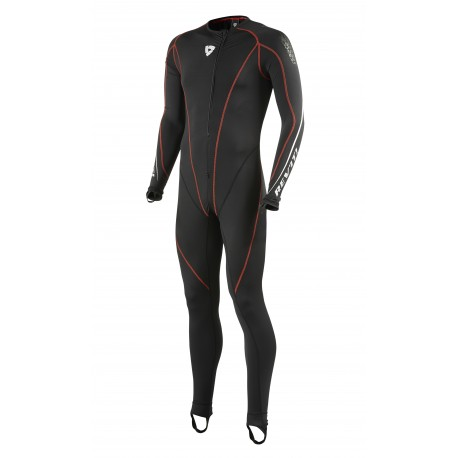
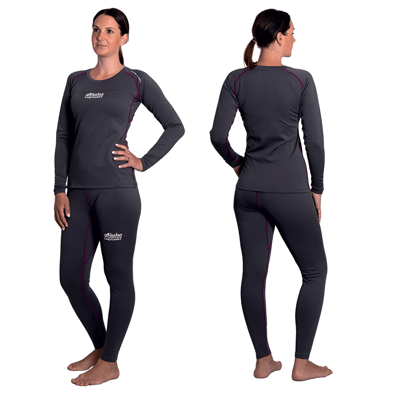
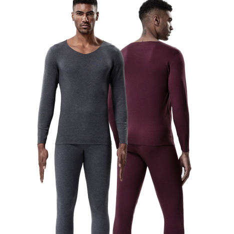
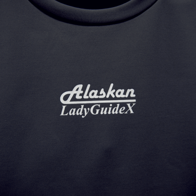
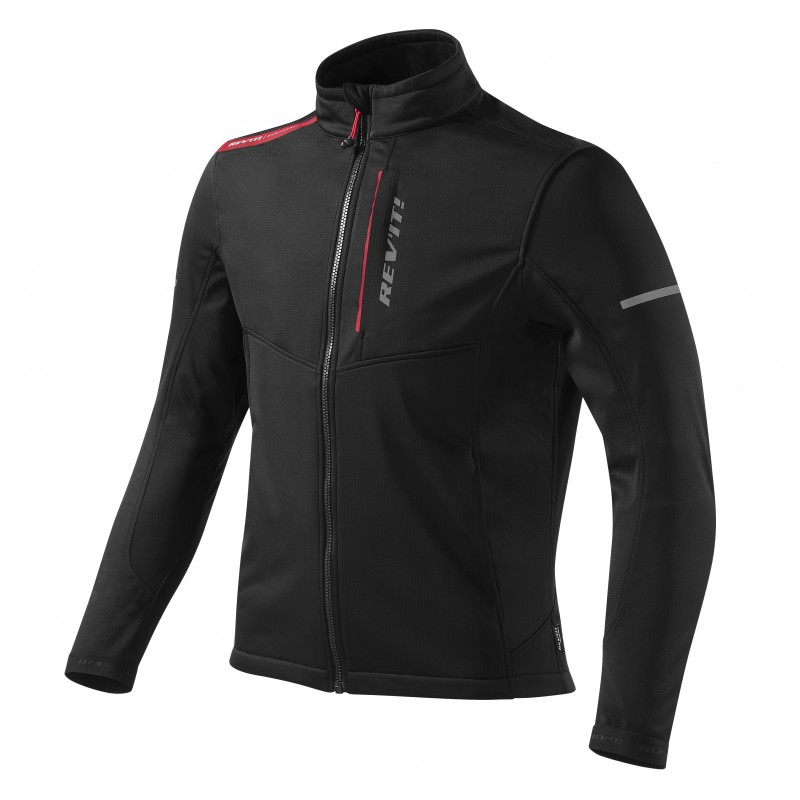

Photo gallery
2020.10.27 02:57


















- Apatiniai termo drabužiai vyrams - Vulcan.lt
MySport yra specializuota sporto prekių parduotuvė, kurioje yra viskas, kas būtina dviračių sportui, bėgimui ir lygumų slidinėjimui. - Įsigykite Terminiai saugikliai - Elfa Distrelec Lietuva
Elfa Distrelec Lietuva stocks a wide range of Thermal Fuses. Next Day Delivery Available, Friendly Expert Advice & Over 150,000 products in stock. - Vaikų terminiai apatiniai drabužiai - kokie šiluminiai ...
Apatiniai terminiai marškiniai DUO-SKIN 100. Šioje svetainėje naudojami slapukai (angl. cookies). Sutinku Plačiau apie naudojimosi taisykles. 8 (686) 68781 Susisiekite su mumis Apie Mus Darbo laikas Pristatymas - Vyrų termodrabužiai nuo Pirmadienio, 10.12. Lidl - www.lidl.lt
Terminiai rūbai Kaukės, apykaklės Vėsinantys priedai Apatiniai rūbai Apatinės pirštinės Kojinės Lietaus apsauga Priedai Valikliai Kepurėlės Marškinėliai Apsaugos Kaklo Nugaros Alkūnių, pečių, kelių apsaugos Kelnės Kelnės vyrams Kelnės moterims Juosmens diržai Džinsai Išpardavimas Šalmai - Šilti apatiniai drabužiai | ARMIJAI IR CIVILIAMS
Terminiai apatiniai marškinėliai LIVERGY 7,99 € 1 vnt. Nuo 10.12. Terminiai džinsai LIVERGY 12,99 € 1 vnt. Nuo 10.12. Terminės apatinės kelnės LIVERGY 7,99 ... - Kokie terminiai apatiniai rūbai yra šilčiausias ...
UAB Pro Marine. Kodas: 301526757. PVM mokėtojo kodas: LT100003943212. Savanorių pr. 176, LT-03154, Vilnius. Telefonas: +37067570343. - Terminiai apatiniai rūbai ALASKAN Master | Apatiniai rūbai ...
Kokybiški šilti apatiniai drabužiai: kelnės, marškiniai, trumpikės ir kiti rūbai. Šilti apatiniai drabužiai kariams ir civiliams, teisėsaugos ir apsaugos darbuotojams, medžiotojams ir aktyvaus laisvalaikio mėgėjams. Platus modelių ir dydžių pasirinkimas. - Apatiniai terminiai marškiniai DUO-SKIN 100
Terminiai apatiniai drabužiai vaikams yra pagaminti iš natūralūs ir sintetiniai audiniai. Merino vilnos šiluminiai apatiniai drabužiai puikiai atstato drėgmės perteklių ir žiemą šalčiui įšyla. Toks terminis apatinis trikotažas tinka atpalaiduojantiems pasivaikščiojimams gryname ore. - Vyriški terminiai apatiniai - MySport
Terminiai apatiniai. Vyriški terminiai apatiniai; Moteriški terminiai apatiniai; Vaikiški terminiai apatiniai; Išpardavimas %%% Avalynė. Sportiniai batai. Vyriški sportiniai batai; Moteriški sportiniai batai; Vaikiški sportiniai batai; Išpardavimas %%% Žygio batai; Laisvalaikio avalynė. Vyriška laisvalaikio avalynė; Moteriška ... - Terminiai rūbai ALASKAN RoyalFish | Apatiniai rūbai ...
Apatiniai termo drabužiai padės jums nesušalti net pačiomis šalčiausiomis žiemos dienomis. Vilkėkite termo rūbus po apačia kasdienių ar sporto rūbų ir jauskitės patogiai, šiltai bei užtikrintai!